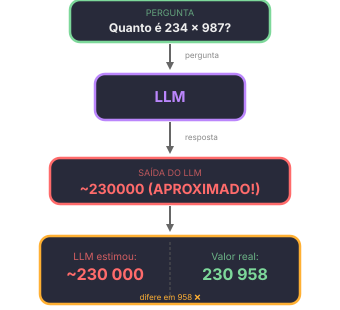
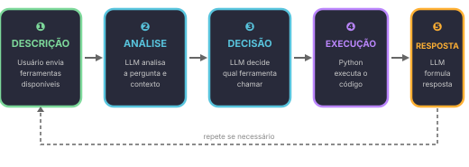
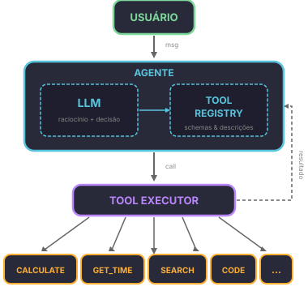

O problema do LLM puro
LLMs são modelos de linguagem. Eles preveem texto, não calculam.
Pergunta: "Quanto é 234 × 987?"
O modelo não calcula. Ele prevê a resposta baseado em padrões do treinamento. Pode acertar (se viu esse cálculo antes), mas geralmente erra em números grandes.

A solução: ferramentas (Tools)
Ferramenta = função Python que o agente pode chamar.
Como funciona o ciclo:

Arquitetura de Ferramentas
Diagrama de Componentes

Referências Importantes
Paper: Toolformer
Título: "Toolformer: Language Models Can Teach Themselves to Use Tools" Autores: Timo Schick, Jane Dwivedi-Yu, Roberto Dessì, et al. Ano: 2023 Link: arXiv:2302.04761
Paper: ReAct
Título: "ReAct: Synergistic Reasoning and Acting in Language Models" Autores: Shunyu Yao, et al. Ano: 2022
O segredo: descrição clara
O modelo decide baseado na descrição.
Descrição RUIM:
Nome: calculate Descrição: Calculator.
→ Modelo não sabe QUANDO usar.
Descrição BOA:
Nome: calculate
Descrição: Performs a mathematical operation between two numbers and returns the exact result.
Use when you need to perform numeric calculations.
Parameters:
- a: first number (float)
- b: second number (float)
- operation: one of 'add', 'subtract', 'multiply', 'divide'
Output: float with the result
→ Modelo entende quando E como usar.
Implementação: Calculadora Estruturada
Em vez de aceitar uma expressão string e tentar fazer parse (inseguro com eval, complexo com AST), usamos parâmetros nomeados. O LLM escolhe a operação por nome — sem risco de injeção de código.
Código: Funções de Ferramenta
""" Ferramentas para o agente: calculadora e horário. Parâmetros nomeados = seguro e simples. """ def calculate(a, b, operation): """ Performs a mathematical operation between two numbers. Args: a: First number b: Second number operation: One of 'add', 'subtract', 'multiply', 'divide' Returns: Result of the operation (float) Examples: >>> calculate(234, 987, 'multiply') 230958.0 >>> calculate(10, 3, 'divide') 3.3333333333333335 """ if operation == 'add': return a + b elif operation == 'subtract': return a - b elif operation == 'multiply': return a * b elif operation == 'divide': if b == 0: return "Erro: divisão por zero" return a / b else: return f"Erro: operação '{operation}' não suportada" def get_time(): """ Returns the current date and time. Takes no arguments — this is a query tool. Returns: String with current date/time (dd/mm/yyyy HH:MM:SS) Examples: >>> get_time() "05/06/2026 19:30:00" """ from datetime import datetime return datetime.now().strftime("%d/%m/%Y %H:%M:%S") # Testes if __name__ == "__main__": print(calculate(234, 987, 'multiply')) # 230958.0 print(calculate(10, 5, 'add')) # 15 print(calculate(10, 0, 'divide')) # Erro: divisão por zero print(calculate(100, 7, 'divide')) # 14.285714285714286 print(get_time()) # data/hora atual
Por que parâmetros nomeados são melhores?
- eval("expressão")
- Executa código arbitrário. Chamada como
calculate("2**100")pode executar qualquer coisa. - AST parse
- Complexo e quebra fácil. Chamada como
calculate("(5+3)/2")requer um parser inteiro. - Parâmetros nomeados
- Seguro e previsível. Chamada como
calculate(5, 3, 'divide')não tem superfície de ataque.
Com parâmetros nomeados:
- O LLM passa valores explícitos (a, b, operation)
- Não há parsing de expressão — a lógica é direta
- A operação é uma string fixa, não código Python
O decorator @tool do LangChain
O LangChain oferece o decorator @tool que transforma uma função Python em ferramenta automaticamente. O segredo: Pydantic faz o parsing e validação — sem necessidade de código manual.
Como funciona
- Você escreve a função normalmente com type hints e docstring
- O
@toolextrai o schema automaticamente (parâmetros, tipos, descrições) - Quando o LLM chama a ferramenta, Pydantic valida e converte os argumentos
from langchain_core.tools import tool @tool def calculate(a: float, b: float, operation: str) -> float: """Performs a mathematical operation between two numbers. Use when you need to perform numeric calculations. Args: a: First number b: Second number operation: One of 'add', 'subtract', 'multiply', 'divide' """ if operation == 'add': return a + b elif operation == 'subtract': return a - b elif operation == 'multiply': return a * b elif operation == 'divide': if b == 0: return "Erro: divisão por zero" return a / b else: return f"Erro: operação '{operation}' não suportada" @tool def get_time() -> str: """Returns the current date and time. Use when the user asks about the current date, time, or 'what time is it'. """ from datetime import datetime return datetime.now().strftime("%d/%m/%Y %H:%M:%S") @tool def get_word_length(word: str) -> int: """Returns the number of characters in a word. Use when the user asks about the length of a word or how many letters it has. """ return len(word)
O que o @tool faz por você
Não precisa de:
- Parsing manual de JSON
- Conversão manual de tipos (string → float)
- Validação manual de argumentos
- Construção manual do schema JSON para o LLM
# ❌ SEM @tool — parsing manual tool_call = llm_response.tool_calls[0] args = tool_call["args"] a = float(args["a"]) # manual! b = float(args["b"]) # manual! operation = args["operation"] # manual! resultado = calculate(a, b, operation) # ✅ COM @tool — Pydantic faz tudo tool_call = llm_response.tool_calls[0] resultado = calculate.invoke(tool_call["args"]) # Pydantic converte string "234" → float 234.0 automaticamente
Conversão automática de tipos
Pydantic converte tipos automaticamente. Se o LLM envia a"234"= (string), vira a=234.0 (float):
# O LLM pode enviar: {"a": "234", "b": "987", "operation": "multiply"} # Pydantic converte automaticamente: # "234" → 234.0 # "987" → 987.0 resultado = calculate.invoke({"a": "234", "b": "987", "operation": "multiply"}) # → 230958.0 ✓ # Se o LLM manda algo inválido: # {"a": "abc", "b": 10, "operation": "add"} # → ValidationError com contexto claro: # "Input should be a valid number, unable to parse string as a number"
Schema JSON gerado automaticamente
O decorator extrai do docstring e type hints:
# Ver o schema gerado print(calculate.args_schema.schema()) # Resultado: # { # "title": "calculate", # "description": "Performs a mathematical operation between two numbers...", # "type": "object", # "properties": { # "a": {"title": "A", "type": "number"}, # "b": {"title": "B", "type": "number"}, # "operation": { # "title": "Operation", # "description": "One of 'add', 'subtract', 'multiply', 'divide'", # "type": "string" # } # }, # "required": ["a", "b", "operation"] # }
Obs.: para a ferramenta get_time, o schema é minimal — properties vazio e required vazio, pois não há argumentos.
Conectando ao LLM: Ollama + gemma4:e2b
O setup completo do Ollama no Colab está no notebook da Semana 4 — incluindo instalação e ollama pull. Aqui focamos em como conectar as ferramentas ao LLM.
Conexão via ChatOpenAI
O modelo gemma4:e2b expõe endpoint OpenAI-compatible (/v1/chat/completions), então usamos ChatOpenAI do langchain-openai:
from langchain_openai import ChatOpenAI llm = ChatOpenAI( model="gemma4:e2b", base_url="http://localhost:11434/v1", api_key="ollama", # Ollama não precisa de key real temperature=0, )
O ciclo manual: bindtools
A forma mais básica de usar ferramentas no LangChain é com bind_tools. O LLM decide qual ferramenta chamar, mas não executa — isso fica por sua conta.
from pprint import pprint from langchain_openai import ChatOpenAI from langchain_core.tools import tool @tool def calculate(a: float, b: float, operation: str) -> float: """Performs a mathematical operation between two numbers. Use when you need to perform numeric calculations. Args: a: First number b: Second number operation: One of 'add', 'subtract', 'multiply', 'divide' """ if operation == 'add': return a + b elif operation == 'subtract': return a - b elif operation == 'multiply': return a * b elif operation == 'divide': if b == 0: return "Erro: divisão por zero" return a / b else: return f"Erro: operação '{operation}' não suportada" @tool def get_time() -> str: """Returns the current date and time. Use when the user asks about the current date, time, or 'what time is it'. """ from datetime import datetime return datetime.now().strftime("%d/%m/%Y %H:%M:%S") @tool def get_word_length(word: str) -> int: """Returns the number of characters in a word. Use when the user asks about the length of a word or how many letters it has. """ return len(word) llm = ChatOpenAI( model="gemma4:e2b", base_url="http://localhost:11434/v1", api_key="ollama", temperature=0, ) # Bind: registra as ferramentas no LLM llm_com_ferramentas = llm.bind_tools([calculate, get_time, get_word_length])
Passo 1: O LLM decide, mas não executa
resposta = llm_com_ferramentas.invoke("Quanto é 234 vezes 987?") pprint(resposta.tool_calls) # [{'args': {'a': 234, 'b': 987, 'operation': 'multiply'}, # 'id': 'call_abc123', # 'name': 'calculate', # 'type': 'tool_call'}]
Repare: resposta.content é string vazia. O LLM não calculou — só disse "use calculate com estes argumentos". A execução é tua.
Passo 2: Você executa a ferramenta
# Extrair a primeira tool_call tc = resposta.tool_calls[0] # Executar a ferramenta if tc['name'] == 'calculate': resultado = calculate.invoke(tc['args']) elif tc['name'] == 'get_time': resultado = get_time.invoke(tc['args']) elif tc['name'] == 'get_word_length': resultado = get_word_length.invoke(tc['args']) print(resultado) # 230958.0
Passo 3: Resultado volta pro LLM
Agora você manda o resultado de volta pro LLM com ToolMessage, e ele formula a resposta final:
from langchain_core.messages import HumanMessage, ToolMessage mensagens = [ HumanMessage(content="Quanto é 234 vezes 987?"), resposta, # AIMessage com tool_call ToolMessage(content=str(resultado), tool_call_id=tc['id']), ] resposta_final = llm_com_ferramentas.invoke(mensagens) print(resposta_final.content) # "O resultado de 234 vezes 987 é 230.958."
Resumo do ciclo manual
- invoke → LLM decide (retorna
tool_calls, não executa) - você executa a ferramenta com os argumentos
- invoke de novo com
ToolMessage→ LLM formula a resposta final
É ReAct em ação: Thought (LLM raciocina) → Action (chama ferramenta) → Observation (vê o resultado) → Answer (responde) (Yao et al., 2022).
O ciclo automático: createagent
O ciclo manual é importante pra entender o que acontece por baixo. Mas na prática, você não quer gerenciar ToolMessage e múltiplas chamadas na mão. O LangChain resolve isso com create_agent:
from langchain.agents import create_agent ferramentas = [calculate, get_time, get_word_length] agente = create_agent(llm, ferramentas) # Uma linha — o agente faz o ciclo inteiro resultado = agente.invoke({"messages": "Quanto é 234 vezes 987?"}) print(resultado["messages"][-1].content) # "O resultado de 234 vezes 987 é 230.958."
O create_agent faz automaticamente:
- Decide se precisa de ferramenta
- Executa a ferramenta
- Manda o resultado de volta pro LLM
- Repete se necessário (várias ferramentas em sequência)
- Retorna a resposta final
Manual vs Automático
- Manual (
bind_tools) - Você controla cada passo. Bom pra aprender e debugar.
- Automático (
create_agent) - Uma linha. Bom pra produzir.
Um gostinho de async
Todas as chamadas que fizemos usam invoke() — síncrono, o código espera a resposta. Mas em Python existe outro jeito:
import asyncio async def conversar(): future = agente.ainvoke({"messages": "Quanto é 234 vezes 987?"}) print("Processando...") # roda imediatamente resultado = await future # agora espera print(resultado["messages"][-1].content) asyncio.run(conversar())
Em notebooks Jupyter/Google Colab, o loop de eventos já está rodando, então asyncio.run() falha. Use nest_asyncio como workaround:
import nest_asyncio nest_asyncio.apply() # Agora asyncio.run() funciona no Jupyter/Colab
A diferença: ainvoke (com a de async) deixa o programa fazer outras coisas enquanto espera o LLM responder. Não parece muito com um agente só — mas quando você tem vários agentes ou várias ferramentas rodando ao mesmo tempo, faz toda a diferença.
Vamos usar isso na próxima aula.
Exercício 1: Ferramenta de Contagem de Palavras
Implemente uma ferramenta que conta palavras, caracteres e frases de um texto usando o decorator @tool.
📝 Gabarito
from langchain_core.tools import tool @tool def count_text(text: str) -> dict: """Analyzes a text and returns statistics. Use when the user wants to know the size of a text. Args: text: Text to be analyzed """ if not text: return {"words": 0, "characters": 0, "sentences": 0} words = len(text.split()) characters = len(text) sentences = len([s for s in text.split('.') if s.strip()]) return { "words": words, "characters": characters, "sentences": sentences } # Teste print(count_text.invoke({"text": "Olá mundo. Como vai?"})) # {"words": 4, "characters": 18, "sentences": 2}
Exercício 2: Testar Conversão Automática
Crie um agente com calculate e get_word_length. Envie mensagens que testem:
- Cálculo simples: "Quanto é 100 + 200?"
- Divisão: "Divida 1000 por 7"
- Comprimento de palavra: "Quantas letras tem a palavra 'Python'?"
- Erro: "Calcule 5 dividido por 0"
📝 Gabarito
from langchain_openai import ChatOpenAI from langchain_core.tools import tool @tool def calculate(a: float, b: float, operation: str) -> float: """Performs a mathematical operation between two numbers. Use when you need to perform numeric calculations. Args: a: First number b: Second number operation: One of 'add', 'subtract', 'multiply', 'divide' """ if operation == 'add': return a + b elif operation == 'subtract': return a - b elif operation == 'multiply': return a * b elif operation == 'divide': if b == 0: return "Erro: divisão por zero" return a / b else: return f"Erro: operação '{operation}' não suportada" @tool def get_word_length(word: str) -> int: """Returns the number of characters in a word. Use when the user asks about the length of a word or how many letters it has. """ return len(word) llm = ChatOpenAI( model="gemma4:e2b", base_url="http://localhost:11434/v1", api_key="ollama", temperature=0, ) llm_com_ferramentas = llm.bind_tools([calculate, get_word_length]) perguntas = [ "Quanto é 100 + 200?", "Divida 1000 por 7", "Quantas letras tem a palavra 'Python'?", "Calcule 5 dividido por 0", ] for pergunta in perguntas: print(f"\n--- {pergunta} ---") resposta = llm_com_ferramentas.invoke(pergunta) if resposta.tool_calls: for tc in resposta.tool_calls: if tc['name'] == 'calculate': resultado = calculate.invoke(tc['args']) elif tc['name'] == 'get_word_length': resultado = get_word_length.invoke(tc['args']) print(f" {tc['name']}({tc['args']}) -> {resultado}") else: print(f" {resposta.content}")
Exercício 3: Nova Ferramenta
Crie uma ferramenta convert_temperature(value: float, from_unit: str, to_unit: str) com @tool, onde from_unit e to_unit são 'celsius', 'fahrenheit', 'kelvin'. Adicione ao agente e teste.
📝 Gabarito
from langchain_core.tools import tool @tool def convert_temperature(value: float, from_unit: str, to_unit: str) -> float: """Converts temperature between Celsius, Fahrenheit and Kelvin. Args: value: Temperature to convert from_unit: Source scale ('celsius', 'fahrenheit', 'kelvin') to_unit: Target scale ('celsius', 'fahrenheit', 'kelvin') """ # Converter para Celsius primeiro if from_unit == 'celsius': c = value elif from_unit == 'fahrenheit': c = (value - 32) * 5 / 9 elif from_unit == 'kelvin': c = value - 273.15 else: return f"Erro: escala '{from_unit}' não suportada" # Converter de Celsius para destino if to_unit == 'celsius': return c elif to_unit == 'fahrenheit': return c * 9 / 5 + 32 elif to_unit == 'kelvin': return c + 273.15 else: return f"Erro: escala '{to_unit}' não suportada" # Teste print(convert_temperature.invoke({"value": 100, "from_unit": "celsius", "to_unit": "fahrenheit"})) # 212.0